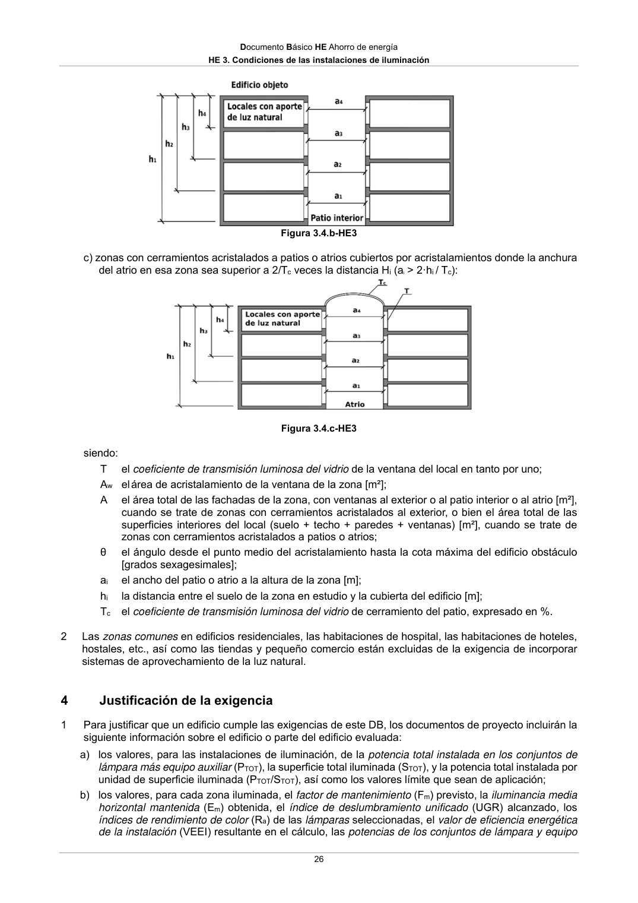

DB-HE · 4 Justificación de la exigencia · versión 2022-06-14
SHA256: 7f890bd495552e979f83f72c5f5c7b642e745911a8e343a7b5b73023ce0e1f05 · página física 26 de 56 · métodos de encabezado
solo si están cotejados.
Formatos: Markdown · JSON de bloques · PDF p. 26 · imagen PNG
Documento Básico HE Ahorro de energía HE 3. Condiciones de las instalaciones de iluminación 26 Figura 3.4.b-HE3 c) zonas con cerramientos acristalados a patios o atrios cubiertos por acristalamientos donde la anchura del atrio en esa zona sea superior a 2/Tc veces la distancia Hi (ai > 2·hi / Tc): Figura 3.4.c-HE3 siendo: T el coeficiente de transmisión luminosa del vidrio de la ventana del local en tanto por uno; Aw el área de acristalamiento de la ventana de la zona [m²]; A el área total de las fachadas de la zona, con ventanas al exterior o al patio interior o al atrio [m²], cuando se trate de zonas con cerramientos acristalados al exterior, o bien el área total de las superficies interiores del local (suelo + techo + paredes + ventanas) [m²], cuando se trate de zonas con cerramientos acristalados a patios o atrios; θ el ángulo desde el punto medio del acristalamiento hasta la cota máxima del edificio obstáculo [grados sexagesimales]; ai el ancho del patio o atrio a la altura de la zona [m]; hi la distancia entre el suelo de la zona en estudio y la cubierta del edificio [m]; Tc el coeficiente de transmisión luminosa del vidrio de cerramiento del patio, expresado en %. 2 Las zonas comunes en edificios residenciales, las habitaciones de hospital, las habitaciones de hoteles, hostales, etc., así como las tiendas y pequeño comercio están excluidas de la exigencia de incorporar sistemas de aprovechamiento de la luz natural. 4 Justificación de la exigencia 1 Para justificar que un edificio cumple las exigencias de este DB, los documentos de proyecto incluirán la siguiente información sobre el edificio o parte del edificio evaluada: a) los valores, para las instalaciones de iluminación, de la potencia total instalada en los conjuntos de lámpara más equipo auxiliar (PTOT), la superficie total iluminada (STOT), y la potencia total instalada por unidad de superficie iluminada (PTOT/STOT), así como los valores límite que sean de aplicación; b) los valores, para cada zona iluminada, el factor de mantenimiento (Fm) previsto, la iluminancia media horizontal mantenida (Em) obtenida, el índice de deslumbramiento unificado (UGR) alcanzado, los índices de rendimiento de color (Ra) de las lámparas seleccionadas, el valor de eficiencia energética de la instalación (VEEI) resultante en el cálculo, las potencias de los conjuntos de lámpara y equipo
